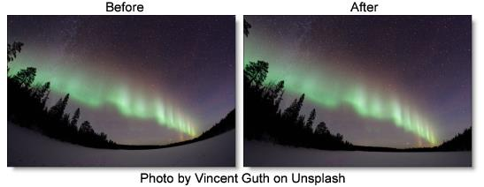
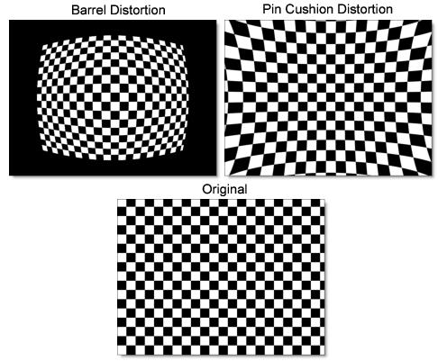

Lens Distortion
Description
Lens Distortion corrects for pin-cushioning and barrel distortion of camera lenses. It is also useful for creating the look of a wide angle lens.
Category
Lens.
Note: Lens Distortion must be applied as the first layer (bottom of the layer stack) when multiple layers are used. Otherwise, all filters below will not be rendered.
Controls
Distortion
Pulls the corners of the image in or out. Negative values pull the corners of the image outward while positive values pull the corners of the image inward.
Anamorphic Squeeze
Anamorphic Squeeze corrects for the squeeze found in anamorphic motion picture lenses.
Curvature X and Y
Curvature X and Y correct for non-radial, asymmetric distortions found in anamorphic motion picture lenses.
Note: Anamorphic Squeeze and Curvature X and Y only work once the Distortion parameter has been moved.
Center
Determines the center point for the distortion. There is an on-screen control in the center of the image. By clicking and dragging the on-screen control or sliders, the Center can be adjusted.